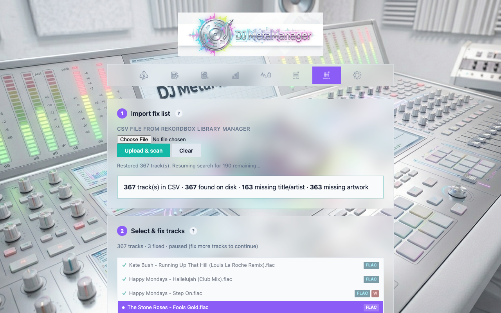
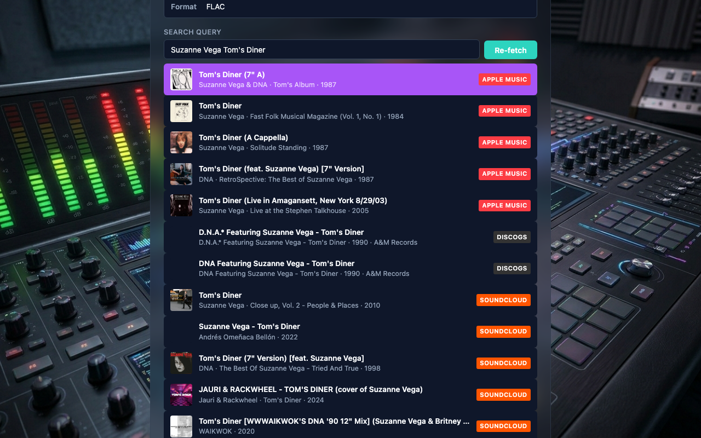
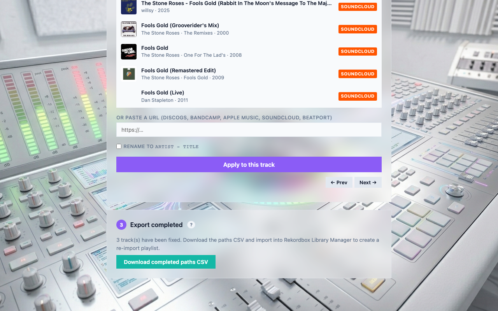

Fix List (Rekordbox Library Manager integration)
The Fix List tab lets you batch-fix tracks with missing metadata across your entire Rekordbox library. It integrates with Rekordbox Library Manager — import a CSV of tracks that need attention, search for metadata automatically in the background, review and apply fixes one track at a time, then export the completed paths back for Rekordbox playlist creation.
Overview: the two-app workflow
Fix List bridges two applications:
- Rekordbox Library Manager (
music_library) reads the Rekordbox 7 encrypted database, finds tracks with missing title, artist, BPM, key, or artwork, and exports a CSV fix list. - DJ MetaManager imports that CSV, searches online sources (Apple Music, Discogs, Bandcamp, SoundCloud, Beatport) for each track, lets you review and apply metadata, then exports the completed file paths.
- Back in Rekordbox Library Manager, import the completed paths CSV to create a temporary Rekordbox playlist. Select all tracks in that playlist, right-click, and choose Reload Tags so Rekordbox picks up the new metadata.
Step 1: Import the fix list
On the Fix List tab, use the file picker to select the CSV exported from Rekordbox Library Manager, then click Upload & scan.
DJ MetaManager checks that each file exists on disk, reads the actual embedded tags (not just what the CSV says), and displays a summary: total tracks, files found, how many are missing title/artist, and how many lack artwork.

CSV format
The CSV contract between the two apps uses these columns:
full_path,file_name,title,artist,bpm,key,file_type,missing_title,missing_artist,missing_bpm,missing_key,has_artworkYou do not need to create this file manually — Rekordbox Library Manager generates it. Each row represents one track in your Rekordbox collection that needs metadata attention.
Step 2: Select and fix tracks
After import, the track list shows all loaded files. Each track displays its filename, a format badge (FLAC, MP3, M4A, AIFF), and coloured badges indicating what is missing:
- T — missing title
- A — missing artist
- B — missing BPM
- K — missing key
- W — missing artwork

Background auto-search
As soon as you upload a CSV, DJ MetaManager starts searching for metadata in the background. Tracks are processed one at a time with a 1-second delay between searches to respect API rate limits. You will see:
- A spinner on the track currently being searched.
- A purple dot when matches have been found and are ready for review.
- A green tick after you have applied metadata to a track.
The status line above the track list shows progress, e.g. 367 tracks · 3 fixed · searching 25/367.
Batch processing limit
To avoid unnecessary API calls, the background search pauses after 25 tracks have been fetched. The status line shows paused (fix more tracks to continue). Once you have applied metadata to roughly 75% of the fetched batch (about 19 of 25 tracks), the queue automatically resumes and fetches the next batch. This means the search stays ahead of your work without wasting requests on tracks you may never get to.
Selecting a track
Click any track in the list to open its detail panel below. You can also navigate with Arrow Up and Arrow Down keys when the track list is focused.
The detail panel
The detail panel shows everything about the selected track:
- Current tags — title, artist, album, year, genre, artwork status, and format as read from the actual file on disk.
- Search results — matching releases from Apple Music, Discogs, Bandcamp, SoundCloud, and Beatport, displayed as cards with artwork thumbnails and coloured source badges. The best match is automatically selected using the same scoring algorithm as Bulk Fix.
- Search query — editable; derived from the file tags or filename. Change it and click Re-fetch to search again with different terms.
- Manual URL — paste any supported catalogue URL (Discogs release, Bandcamp album, Apple Music link, SoundCloud track, or Beatport track page) to use instead of the search results.
- Rename to Artist - Title — optional checkbox to rename the file after applying metadata.
- Prev / Next navigation buttons to step through the track list without scrolling.

Fetching matches for a specific track
If the background queue has not reached a track yet, you can click Fetch now to jump the queue and search immediately. If the queue is running, the track is moved to the front of the queue; if the queue is paused, the search runs directly. You can also edit the search query and click Re-fetch to search with different terms at any time.
Applying metadata
Once you have selected a result (or pasted a URL), click Apply to this track. A confirmation dialog shows what will be written. After applying:
- Tags (title, artist, album, year, genre) and artwork are embedded in the audio file.
- The track shows a green tick in the list.
- The current tags section updates to reflect the new metadata.
- The file path is added to the completed list for export.
Step 3: Export completed paths
After fixing tracks, the export section at the bottom shows how many have been completed. Click Download completed paths CSV to save a file containing the full paths of all successfully fixed tracks.

Import this CSV back into Rekordbox Library Manager. It creates a temporary Rekordbox playlist containing all the fixed tracks. In Rekordbox, select all tracks in that playlist, right-click, and choose Reload Tags to pull the updated metadata into the Rekordbox database.
State persistence
Fix List state is saved to the server automatically as you work. This means:
- If you navigate to another tab and come back, your track list, search results, and selections are preserved.
- If you close the app entirely and reopen it (even after a rebuild), the state is restored from disk. The background search resumes from where it left off.
- Clicking Clear removes the saved state and resets the page.
fix_list_state.json (in ~/Library/Application Support/DJ MetaManager/ for the packaged app, or next to app.py in development). This survives app rebuilds, unlike browser-only storage.
Tips and best practices
- Work in batches. With large libraries (hundreds of tracks), the batch limit keeps the search queue manageable. Fix the fetched tracks before moving on; the queue resumes automatically.
- Check the auto-selected match. The scoring algorithm is good but not perfect. Glance at the highlighted result before applying — if it looks wrong, click a different result or paste a URL.
- Use Re-fetch for difficult tracks. If the filename does not produce useful search terms, edit the query to something more specific (e.g. add the artist name or a remix subtitle) and click Re-fetch.
- Paste URLs for known releases. If you know the exact Discogs release page, Bandcamp album, or Apple Music link, paste it in the manual URL field. This is often faster than scrolling through search results.
- Export early and often. You can download the completed paths CSV at any time — it always reflects the current set of fixed tracks. If you need to stop and come back later, the state is preserved.
Differences from Bulk Fix
| Feature | Bulk Fix | Fix List |
|---|---|---|
| Input | Folder of FLAC files | CSV from Rekordbox Library Manager (any format) |
| Scope | Files in one directory tree | Specific tracks from your Rekordbox database, anywhere on disk |
| Search | Manual (click Fetch online matches) | Automatic background queue with batch limits |
| Review | Table with all tracks visible, dropdown per row | One track at a time with full detail panel |
| Sources | Apple Music, Discogs, Bandcamp | Apple Music, Discogs, Bandcamp, SoundCloud, Beatport |
| Output | Tags applied directly to files | Tags applied + completed paths CSV for Rekordbox re-import |
| State | Browser localStorage | Server-side file (survives app rebuilds) |
API endpoints
For developers and advanced users, Fix List uses these server endpoints:
| Method | Path | Purpose |
|---|---|---|
POST |
/api/fix-list/upload |
Parse CSV, verify files exist, read actual tags from disk |
POST |
/api/fix-list/suggest |
Search online sources for up to 60 tracks (Apple Music, Discogs, Bandcamp, SoundCloud, Beatport) |
POST |
/api/bulk-fix/apply |
Apply metadata from a chosen URL to an audio file (shared with Bulk Fix) |
POST |
/api/fix-list/export-completed |
Write completed file paths CSV to the logs directory |
GET |
/api/fix-list/state |
Load persisted fix list state from disk |
POST |
/api/fix-list/state |
Save fix list state to disk |
DELETE |
/api/fix-list/state |
Clear persisted state |